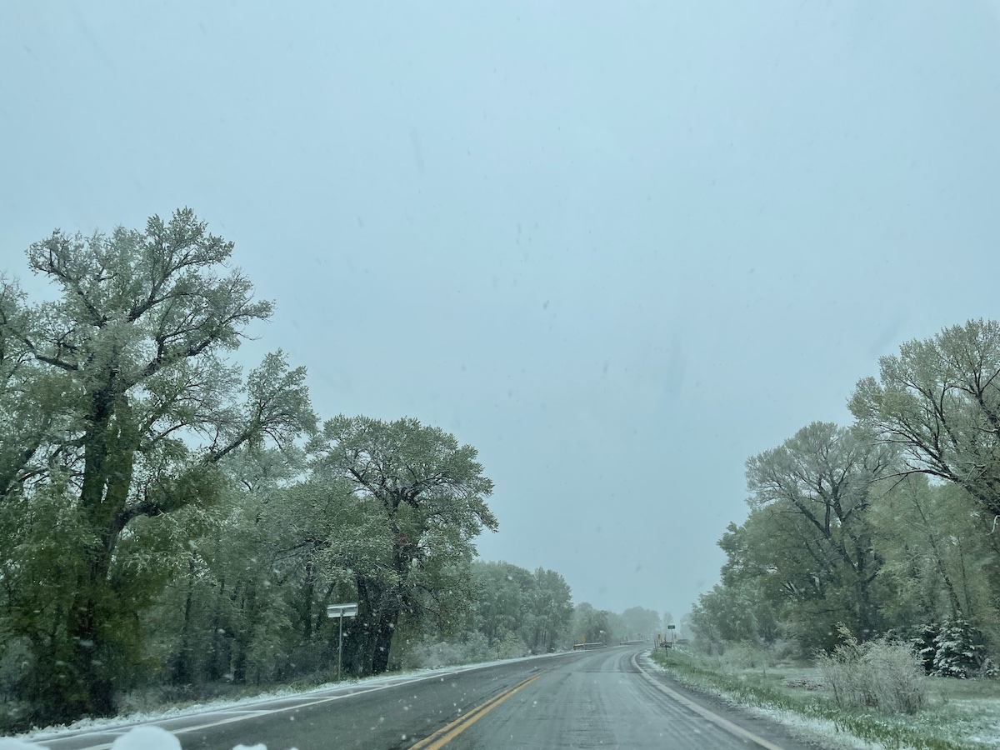
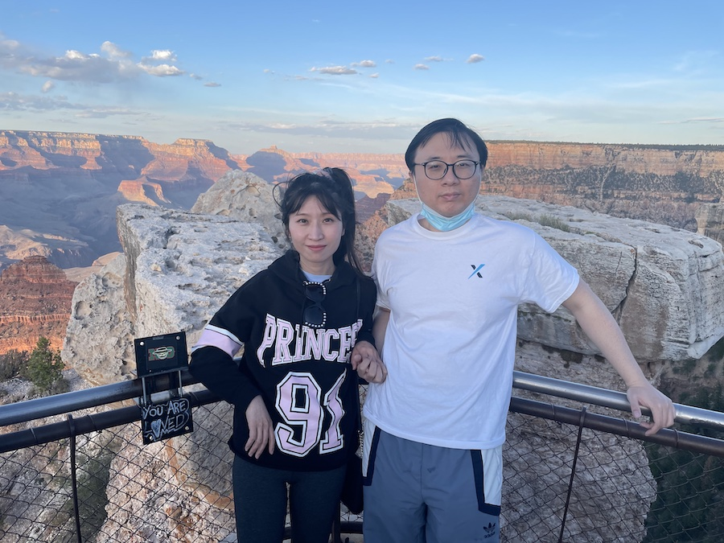
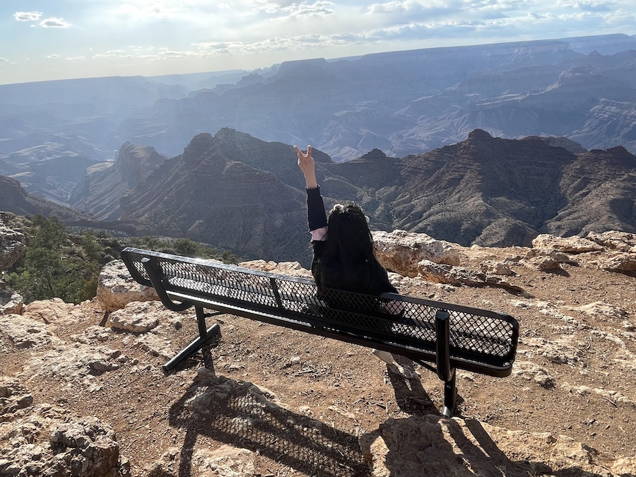

千里之行，
始于足下
--路漫漫其修远兮，吾将上下而求索--

--路漫漫其修远兮，吾将上下而求索--

在做了充足的准备后，我们从雨果顿出发了。娇娇负责陪毛毛聊天以防毛毛疲劳驾驶和喂饱毛毛，毛毛的任务就多样化了，除了专职开车以外，还有计划各种路线合游玩景点等等。饿了就张嘴等娇娇投食就行。
原本这天打算玩大沙丘公园，可沙漠居然下雪夹冰雹了，路上也是突然降温，毛毛和娇娇都没做好准备，等到了Alamoso的宾馆后，都有点感冒😷了。两个人都奄奄一息，还好吃了AirBone才缓了过来。

一大早，窗外居然下起了小雪。也许这是之后发生小插曲的预兆吧。。娇娇应该是很久没看到雪❄️了，兴奋地哇哇大叫，跑到外面去转圈跳舞💃。
于是毛毛临时改变计划，直接往大峡谷公园进发。根据导航，我们会翻越一座雪山🏔️。雪越下越大，我们也只能小心翼翼地以二三十迈速度龟行。

好不容易越过雪山之后，途径四州相交点纪念碑，可惜疫情已经封锁很久了，只能在大门外面看看。一对和蔼可亲的从佛罗里达开车过来玩的老夫妇主动提出帮我们拍照，好心人真的很多。

大约又开了四五个小时，在傍晚时分我们到达了此次旅游真正意义上的第一个景点--大峡谷公园。大概是坐太久了，娇娇下车后就像顽皮的猴子一样四处转悠，毛毛拉也拉不住。
接着来到观景平台，体验了一览众山小的感觉。毛毛上次来这里还是七年前，故地重游，别有一番风味在心头。只是同游的不再是基友，而是女友的陪伴。
有个小彩蛋是，娇娇看到离悬崖不远处有个长椅，就很想拍照。毛毛怕危险一直不让，最后经不住死缠烂打还是拍了。

逛了两小时后，眼看太阳快要下山，我们便匆忙赶去公园门牌那里。很幸运的是，那儿还碰巧有人在，于是就有合影啦，完美！
之后我们在临近的小镇Grand Junction随便找了间小旅馆住了下来，房间真的很小，让我们都惊呆了，不过这也许是为了和之后一天的威尼斯人作对比吧～